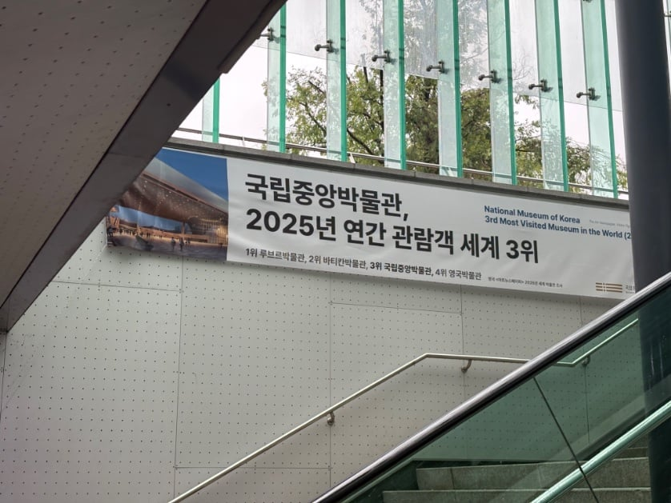

루브르 바티칸 국중박 레츠고가 현실이 되다니;;

루브르 바티칸 국중박 레츠고가 현실이 되다니;;
26년 랭킹엔 이집트 대박물관이 들어가있겠네
거길 체급 자체가 다르던데 ㅋㅋㅋㅋㅋㅋ
도둑질한거 있음
우리가 한건 아니고 그 일본땡중새끼가 중앙아시아에서 긴빠이 쳐옴
놀랍게도 저 안에 훈민정음 해례본 간송본은 없음
1. 국중박 초딩때 가보고 한번도 못 가봄
2. 루브르 가려고 1월에 가이드 투어 예약 해 놧는데 파업해서 못 감 ㅅㅂㅅㄲ들
3. 바티칸 투어 피렌체 우피치 가고 나서 가니깐 노잼이었음
이탈리아~프랑스 여행 갈 때 로마부터 가셈 프랑스 파리 출발하면 로마 개노잼됨
전시관 기획자도 레전드지
미쳤다... 영국박물관을 제끼네ㅋㅋㅋㅋㅋㅋ
가장 한국적인 것이 가장 세계적인 것이 됐네
영국 박물관은 유럽에 다른 너무 좋은데가 많아서 사실 여향코스에서 빠지는경우가 많음 ㅋㅋ
나도 르부르 우피치 바티칸 오르세 뭐이렇게 가다보니 영국가니 미술관 박물관 이제 굳이? 싶어서 안감 ㅋㅋㅋ
난 워싱턴 갔을때 존나 행복했는데 근처에 박물관 다 몰려있어서. 국중박도 근처에 미술관이나 공연장 같이 있으면 좋겠다 생각함. 예술의 전당 + 국중박 + 궁궐 같이있었으면 시너지 엄청났을듯.. 아쉽다. 그나마 전쟁기념관은 근처긴 함.
오.... 조만간 워싱턴DC 갈 예정인데, 기대된다 ㅋㅋ
ㅇㅇ 박물관, 미술관 좋아하면 존나 행복할꺼임 하루에 다 못봄.
일주일 정도 있을 거라 한 이틀~사흘 정도 일정 잡고 쭉 봐야겠네 ㅋㅋ
링컨 기념관 근처에 625한국전쟁 기념공원? 기념 조형물? 같은거 있으니 추천!
추천 고마워 감사감사
주미대한제국공사관도 워싱턴DC에 있어 그거 먼저 전날 예약해서 구경하고 쭉 걸어서 내려가 안에 잘꾸며놨더라 안에 화장실도 꼭 들러보고
국중박! 국중박! 국중박!
국중박 가보고나서 느낀건 백제가 그냥 쩔었다는거
국중박 뒤로보이는 용산기지와 남산타워가 킥임
솔직히 케데헌이 큰몫했다
몰카 그만 하라고 ㅋㅋㅋ
사실상 약물들이 금은 먹었을 때 피지컬로만 동메달 딴 로즈란 급
무료입장은 도핑에 안 걸림.
루브르 3회, 바티칸 1회 방문했는데 정작 국중박은 가기가 빡시네..
국중박 혼자 무료 아니냐 근데
기본무료관 있고
기획전은 유료ㅇㅇ..
와 대영컷 ㅋㅋㅋ
ㅇㄱㅈㅉㅇㅇ? ㄷㄷㄷ
먼소리노
참고로 국중박 가려면 내년 2월 이후에 가라..
부분 리뉴얼한다고 1월말까지 일부 전시장이 닫혀있어
ㄹㅇ이가..